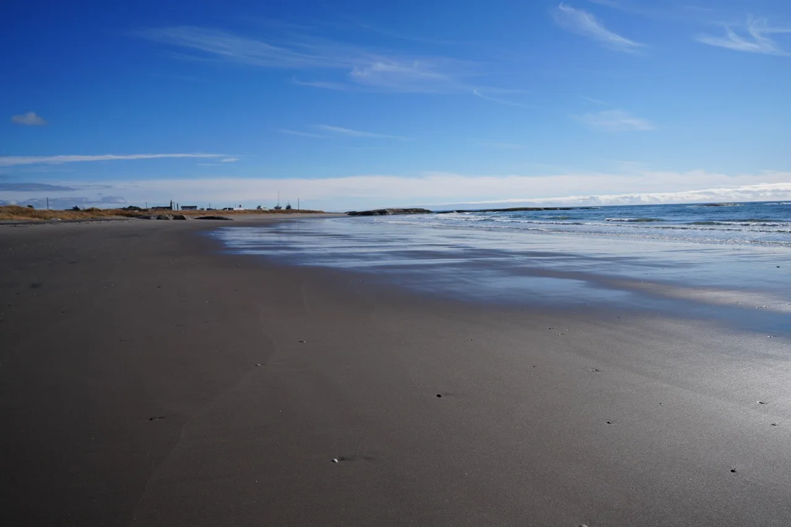
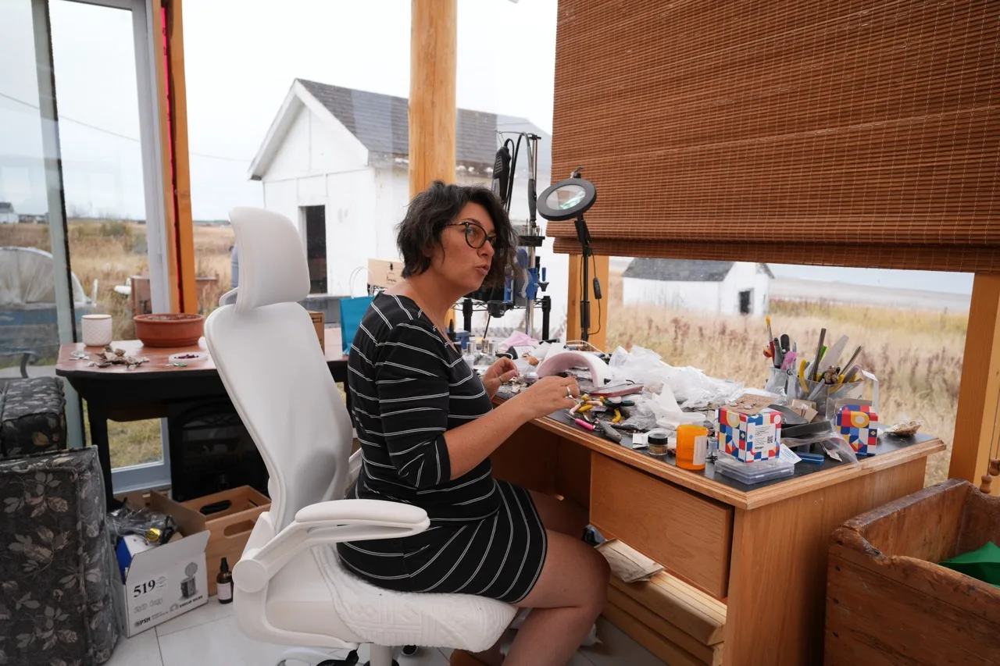

Rivière-au-Tonnerre · Minganie · Côte-Nord
Belles de Mer
Bijoux uniques façonnés à la main par Karyn Vignola, à partir de coquillages, d’oursins et d’écorces cueillis sur les rives du golfe du Saint-Laurent.
« Chaque bijou raconte une marée : ce que la mer dépose sur la grève, je le transforme en trésor à porter. » Karyn Vignola, artisane bijoutière
Les créations
La galerie
Boucles d’oreilles, pendentifs, bagues et bracelets en résine, tous des exemplaires uniques : deux coquillages ne se ressemblent jamais.
La galerie évolue au rythme des marées et des saisons — de nouvelles créations s’y ajoutent régulièrement.

L’artiste
L’atelier face à la mer
C’est dans son atelier de Rivière-au-Tonnerre, fenêtres ouvertes sur le golfe, que Karyn donne une seconde vie aux trésors ramassés à marée basse : coquillages de pétoncles et de moules, oursins, patelles, algues, lichens et écorces de bouleau.
Chaque trouvaille est nettoyée, triée, puis délicatement coulée dans la résine ou montée sur métal. Aucun moule, aucune série : chaque pièce est unique, comme le morceau de littoral qu’elle emprisonne.
L’atelier se visite — c’est aussi un point de vente. Les visiteurs de passage en Minganie peuvent y rencontrer l’artiste et repartir avec un morceau de Côte-Nord.
— Karyn
Où les trouver
Les points de vente
Les créations Belles de Mer sont offertes en boutique, de Sept-Îles à Natashquan, le long de la route 138 — et directement à l’atelier de Karyn.